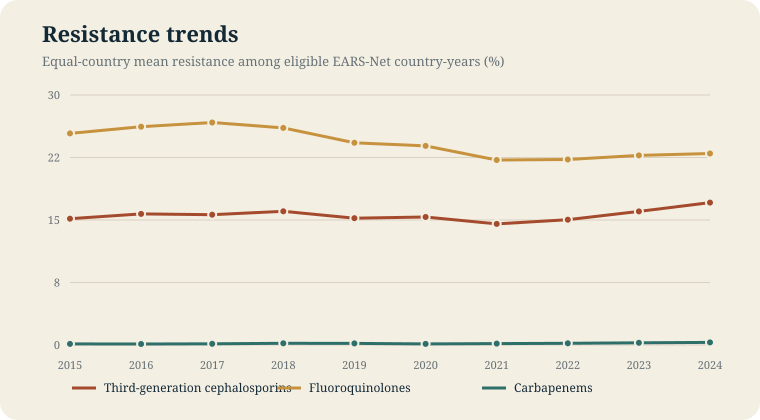
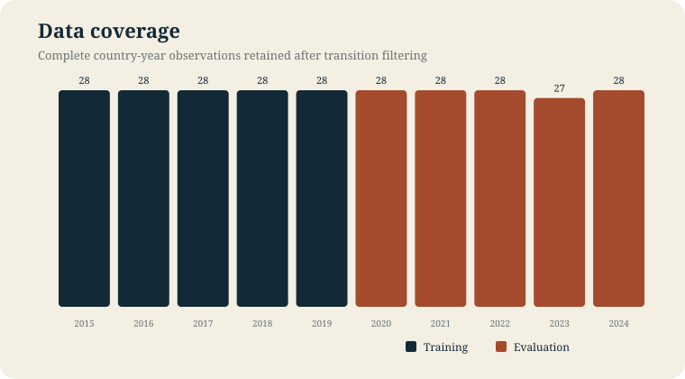
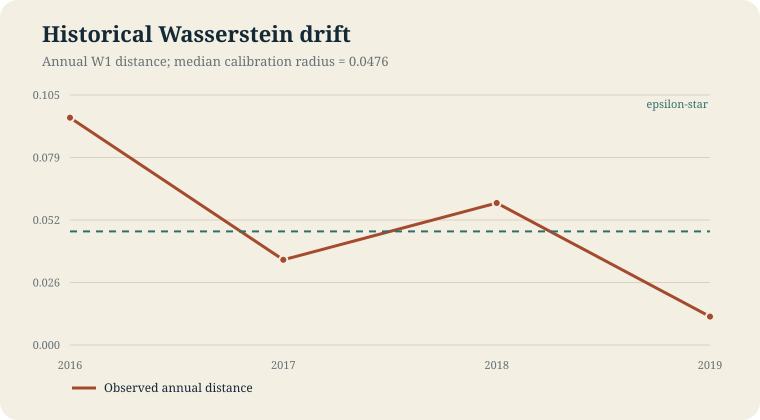
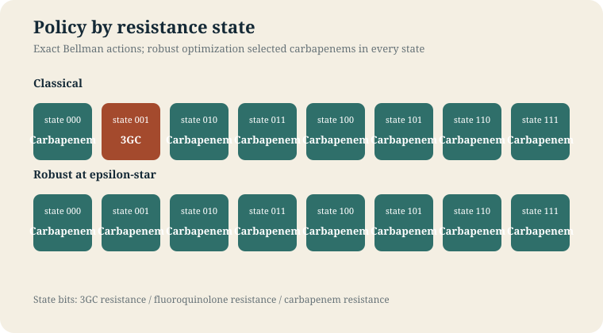
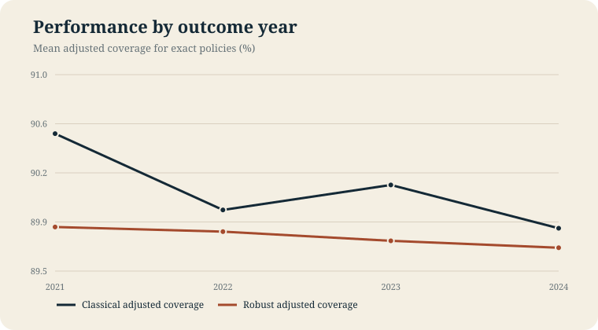
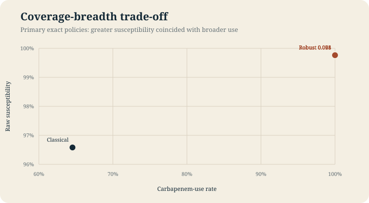

01 / Research question
Does robustness preserve useful coverage under drift?
The project compares classical and Wasserstein-robust tabular Q-learning for population-informed empiric antibiotic selection. It uses invasive Escherichia coli surveillance, not patient records.


02 / Decision model
A small MDP with an explicit boundary.
Three binary resistance indicators define each state. Actions select an antibiotic class. Resistance transitions are action-independent, so the model does not claim that recommendations change future resistance.
Temporal separation
Transitions ending by 2019 train the model; decisions from 2020-2023 are evaluated on 2021-2024 outcomes.
Radius calibration
The Wasserstein radius is the median historical annual W1 distance: 0.0476.
Independent tuning
Classical and robust learners use rolling-origin validation, followed by 30 fixed seeds and exact Bellman checks.


03 / Result
Robustness increased susceptibility, but not the endpoint that penalized broad use.
The classical exact policy achieved 90.13% adjusted coverage with 64.55% carbapenem use. At epsilon-star, the robust exact policy achieved 89.76% adjusted coverage with 100% carbapenem use. No primary training group met the strict all-seed convergence criterion.


04 / Reward sensitivity
Changing the objective changed the policy.
A prespecified secondary reward added breadth, representative acquisition cost, and an action-severity pressure interaction. These are normative penalties, not estimated causal effects.
| Scenario | Classical policy | Carbapenem use | Scalar reward |
|---|---|---|---|
| Primary | 20222222 | 64.55% | 90.13% |
| Breadth + pressure | 20222222 | 64.55% | 79.92% |
| Breadth + cost + pressure | 00022222 | 49.09% | 78.12% |
Scalar rewards across different definitions are not directly comparable.
05 / Interpretation limits
What this evidence does not establish.
Not patient-specific
Country-year surveillance cannot represent individual diagnosis, contraindications, severity, dose, route, or local formulary constraints.
Not causal stewardship
Actions do not alter the transition kernel. Future-pressure terms express a normative preference rather than an estimated intervention effect.
Not fully converged
Policy agreement was high, but every final training group failed the strict all-seed exact-policy criterion.
Not clinical guidance
The project evaluates a modeling hypothesis under documented surveillance limitations; it does not recommend antibiotics for care.